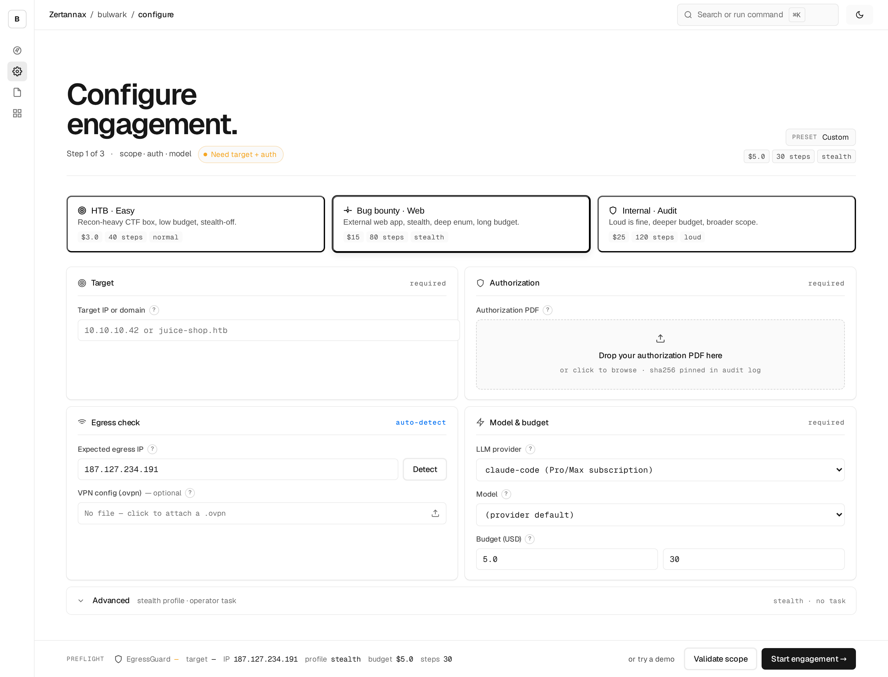

Pentest,
on
autopilot.
autopilot.
autopilot.
Point BULWARK at an authorized target. Walk away. Come back to a clean report — confirmed exploits, CVSS scores, an audit log for every step. No dashboard theater, no babysitting.

Six phases, every one observable.
BULWARK runs a deterministic, audit-logged pipeline from scope validation to signed report. Every payload, every decision, every timestamp — preserved and reproducible.
Three stages, one signed audit log.
BULWARK's methodology is documented end-to-end. Every step is observable, every payload reproducible, every decision defensible. Click a stage to see what runs.
Reconnaissance — passive + active, scoped to your allow-list
47 data sources fan out in parallel. Subdomain enumeration, certificate transparency, ASN mapping, exposed-service detection. Everything discovered is tagged with confidence and provenance so downstream decisions are auditable.
Vulnerability match — stack fingerprint, not generic CVEs
Every host is fingerprinted against your actual stack before templates fire. A Solr box gets Solr-specific checks, not a generic Apache CVE. Templates refresh daily from NVD, GHSA, nuclei, and vendor advisories.
Verification — every finding reproducibly confirmed
No "potentially vulnerable" hedging. Each candidate gets a controlled verification run: payload logged, request/response captured, artifact hashed, timestamp preserved. Failed verification gets dropped, not papered over.
How BULWARK runs.
Single binary, four primitives. The runner is a sandboxed process on a hardened image; the audit log is append-only with hash-chained entries; the report builder is offline and reproducible.
Reports an engineer reads in 30 minutes.
Every finding has a reproducible PoC, a business-impact summary, and remediation steps your junior can execute. No 200-page compliance theater — no executive-summary-without-evidence.
Three formats ship in the same engagement: Markdown for your wiki, JSON for your SIEM, signed PDF for your auditors. All three are generated from the same source-of-truth finding records — no copy paste, no drift.
- Triage viewmarkdown
- SIEM ingestjson · STIX 2.1
- Audit packpdf · cosign-signed
- Close-the-loopPR with finding fix
- Chain-of-custodysha256 audit-log
From CLI to clean report in 14 days.
Median engagement runtime. No third-party dashboards, no Slack pings, no waitlists. You start a scan, you get a report. That's it.
Configure
Pick a preset or describe your target. Drop your authorization PDF. Set budget and stealth profile.
Run
BULWARK runs six phases — recon, vuln match, controlled exploit, evidence capture. You watch or walk away.
Report
Three formats, all signed. Triage view for your CISO, technical detail for the engineer who fixes it.
BULWARK vs traditional pentest firm.
Same scope, same rigor — different delivery model. Below is how a Continuous engagement stacks up against the typical 6-week consultancy you might be weighing against.
Compliance and audit posture, included.
What we don't do.
Clear scope is half the value of an autonomous agent. Below is the honest list of what BULWARK explicitly does not attempt — and who we hand off to when it's the right call.
Three ways to engage.
None of them require a six-month sales call. Pick what fits, ship scope, get a report. Upgrade or pause between engagements.
One-time scoped sweep. Great for the first run or a point-in-time check after a big release.
- In-scope hostsup to 25
- Phases includedrecon + match
- Report formatsmd + json
- Delivery SLA14 days
- Controlled exploitation—
- Remediation retest—
Ongoing external coverage. Weekly recon, monthly exploitation passes, quarterly business review.
- In-scope hostsunlimited
- Phases includedall six
- Report formatsmd + json + pdf
- Finding triage SLA24h
- Controlled exploitationauthorized
- Remediation retestincluded
Air-gapped deployment, custom rules-of-engagement, dedicated SRE on-call. For regulated industries.
- Deploymenton-prem / VPC
- Detection templatescustom
- SRE + DPOdedicated
- Evidence packSOC2 + ISO 27001
- Air-gap approvedpayloads
- SLA + on-callcustom
Built in public.
We ship weekly. Every release is signed, every change is in the public changelog. Subscribe via RSS or follow on GitHub.
Questions we hear most.
If yours isn't here, ping us at hello@getwark.com — we usually reply within a day.